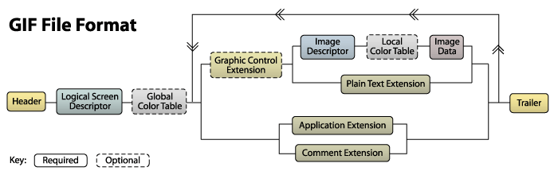

Single File Ruby Programs
Christian Bäuerlein
Created: 2020-03-27 Fri 10:45
Welcome!
The Lost Art of Single File Ruby Programs
A loose collection of Ruby fun facts and examples to organize your code in a single file.
Let's have some fun with Ruby!
Code & tests in one file
Ruby Magic Constants
There is ~$0.
Contains the name of the file containing the Ruby script being executed.
The source file
def greet(name)
"Hello #{name}!"
end
# this will only run if the script was the main
# not load'd or require'd
if __FILE__ == $0
require "test/unit/assertions"
include Test::Unit::Assertions
assert_equal 'Hello Ruby', greet('Ruby'), "greet function should return 'Hello Ruby!'"
end
When called directly
$ ruby code_and_test.rb
greet function should return 'Hello Ruby!'. (Test::Unit::AssertionFailedError)
<"Hello Ruby"> expected but was
<"Hello Ruby!">.
diff:
- Hello Ruby
+ Hello Ruby!
?
When required
require './code_and_test.rb'
puts greet "Christian"
$ ruby code_and_test_usage.rb
Hello Christian!
You may know this from Python
def hello():
print("Hello world, this script was called!")
if __name__ == '__main__':
hello()
A webserver in one file?
My life before Ruby
Before Ruby, my favorite web framework was CodeIgniter.
Security first: One index.html file in EVERY folder.
Sinatra 0.6
sudo gem install sinatra
require "rubygems"
require "sinatra"
get '/' do
"Hello World"
end
Awesome!!!
ruby myapp.rb
Templates: Uncool way
"You can do this too but it's not as cool" - Sinatra Readme
template :index do
'%div.title Hello World!'
end
Templates
As documented in the README.rdoc this was the cool way to do it.
get '/' do
haml :index
end
use_in_file_templates!
__END__
@@ layout
X
= yield
X
@@ index
%div.title Hello world!!!!!
A little Ruby history
Ruby is a better Perl
Why the name 'Ruby'?
Influenced by Perl, Matz wanted to use a jewel name for his new language, so he named Ruby after a colleague's birthstone.
Source: The Ruby Language FAQ
Perl's legacy
Ruby took a lot of things from Pearl.
Today we will learn about:
- Keywords
- Command line flags
Let's start with Perldata
Perl has two special literals:
__END__- Indicates the logical end of the script before the actual end of file. Any following text is ignored.__DATA__- A filehandle that points to everything that comes after__END__.
Source: perldata - perldoc.perl.org
The __END__ and DATA keywords
Denotes the end of the regular source code section of a program file. Lines below
__END__will not be executed.
Those lines will be available via the special filehandle
DATA
Source: Class: Object
Simple Example
DATA.each_line do |line|
puts line
end
__END__
Doom
Quake
Diablo
ERB template and code in one file
require 'erb'
time = Time.now
renderer = ERB.new(DATA.read)
puts renderer.result()
__END__
The current time is <%= time %>.
Explained: Sinatra Style Multiple Templates in File
get '/' do
haml :index
end
use_in_file_templates!
__END__
@@ layout
X
= yield
X
@@ index
%div.title Hello world!!!!!
File.read(caller.first.split(":").first).split("__END__", 2).last
Source: Mixing code and data in Ruby
PSA: PHP can do it as well
// open self
$fp = fopen(__FILE__, 'rb');
// seek file pointer to data
//__COMPILER_HALT_OFFSET__ will return
//the point after __halt_compiler();
fseek($fp, __COMPILER_HALT_OFFSET__);
// and output it
$unpacked = gzinflate(stream_get_contents($fp));
__halt_compiler();
//now here... all the binary gzdeflate already items!!!
Source: PHP: __halt_compiler - Manual Example: __halt_compiler(), make install files for PHP smaller
Bundler inline
Fun fact: You don't need a Gemfile to use bundler!
Useful for scripts in your /utils folder that you only use once a year.
Inline HTTParty
require 'bundler/inline'
gemfile do
gem 'httparty'
end
puts HTTParty.get('https://www.boredapi.com/api/activity')
Inline Minitest
require 'bundler/inline'
gemfile do
gem 'minitest', require: false
end
require 'minitest/autorun'
class MyTest < Minitest::Test
def test_should_be_true
assert_equal true, true
end
end
Advanced Example: Download iCal to org
- Install Dependencies
- Do stuff (download calendar events)
- Render to ERb template
Source: ical_to_org.rb
BEGIN and END Keywords
Yes, this is taken from Perl as well.
Definition
BEGIN defines a block that is run before any other code in the current file. It is typically used in one-liners with ruby -e.
Similarly END defines a block that is run after any other code.
Source: Documentation for Ruby 2.2.0
Example
END { puts 3 }
BEGIN { puts 1 }
puts 2
ruby begin.rb
1
2
3
Introducing LRuby
Logging Ruby - The Ruby alias for the forgetful scripter Logging Ruby!
Only Feature: No more scrolling through your terminal… Logs the output of a script to the script itself!
Let's try this out
cat log_results/hello_world.rb
ruby log_results/hello_world.rb
Introducing: LRuby
lruby log_results/hello_world.rb
cat log_results/hello_world.rb
How does it work?
which lruby
Let's check out the source of LRuby lruby.rb
The Garbage Flag
Aaaaand back to Perl!
Perlrun
perl -x
Leading garbage will be discarded until the first line that starts with #! and contains the string "perl".
Source: perlrun - perldoc.perl.org
But… Why?
Tells Perl that the program is embedded in a larger chunk of unrelated text, such as in a mail message.
And in Ruby..
ruby -x
Tells Ruby that the script is embedded in a message. Leading garbage will be discarded until the first that starts with "#!" and contains string "ruby".
Source: Ruby Docs Command line Options
Example
Hello dear friend,
this is a mail message. Please execute it with your ruby interpreter.
Thanks,
a random stranger
#! hahaha this is ruby now
puts "Hello World"
ruby -x email.eml
A self-animating GIF
This is not an animated gif, but a gif that animates itself.
Let's talk about GIFs

A GIF file consists of blocks

Example
Terminator Byte
The trailer block indicates when you've reached the end of the file. It is always a byte with a value of 3B.
Source: What's In A GIF
Soooo now we know that..
- GIFs are nice
- GIFs always end with the same terminator byte
- Ruby is nice
- Ruby can start with a defined start line
- Nice.
A self-animating GIF
This is not an animated gif, but a gif that animates itself.
- One file
- Upper half is a GIF
- Lower half is Ruby code
- File rewrites itself!
- Profit!
Source Code
Let's check out the rbgif.gif source code together!
{kind=link}
LIVE DEMO!
while 1; do cd ~/Dropbox/slides/single-file-ruby-programs/rbgif; time ruby -x ./rbgif.gif; sleep 0.1; done
One more thing…
#!/bin/sh
echo This is bash
i=12
echo $i
perl - $i <<'__HERE__'
my $i = shift;
print "This is perl\n";
print ++$i . "\n";
__HERE__
echo This is bash again
echo $i
Perlmonks.org 2000 Testimonials
- "Ain't that fun?" - dchetlin
- "It's strange and terrible and I'm not sure how to get something out of the perl part, but this sort of works" - eg
- "This, on the other hand is just … just .. well, I don't know. Not right. Not even wrong. It just is." - Blue
Summary
Ruby is fun!
Single File Ruby Programs
- Code & Tests
- Dependencies & Code
- Data & Code
- Code & Data
- Code & Output
Try it out for fun and profit!
Thanks!
Questions?
Christian Bäuerlein @fabrik42